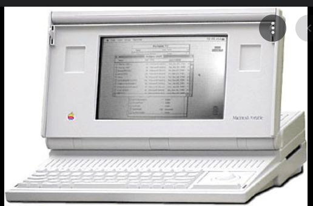

Década de 2010 e Futuro
Chrome OS 2010:
Em 2008 a Google analisando o que os usuários mais faziam na internet percebeu que as atividades principais eram: ver vídeos, jogar, e conversar. Assim, a ideia da Google era um navegador rápido, leve e ágil para essas atividades. No ano seguinte, a Google lança um navegador ousado, onde revolucionou a forma como armazenamos nossos dados hoje. Esse era o Chrome OS, um sistema operacional diferente no qual os dados dos usuários ficariam na rede e não mais no aparelho, assim se dava o conceito de nuvem, ou computação em nuvem.
Google Classes 2012:
Um dispositivo pensado para ser um simples par de óculos transparente, mas que pode projetar na lente imagens geradas por computador, como por exemplo, eventos da sua agenda, comunicação visual com outras pessoas, dados sobre o clima, dados de navegação, informações sobre estabelecimentos comerciais etc.
Em 2015, a Google suspendeu o projeto para repensá-lo. No final de dezembro de 2015, a empresa apresentou um novo projeto à comissão federal de comunicações. É possível que uma nova versão possa aparecer em 2016, mas nada confirmado ainda
Oculos Desenvolvido pela GOOGLE
Computadores:
O primeiro computador móvel surgiu em 1981, criado por Adan Osborne, a invenção dele ficou conhecido como o primeiro computador portátil da história, a máquina tinha tela de 5 polegadas, pesava 12kg e custava 1800 dólares.
1º Computador Móvel feito por Adam Osborne
Apesar de não ter havido muitas inovações nesse sentido na época, os anos de 2000 para frente houveram muitas inovações no sentido de computador portátil sem ser o smartphones.
O ano de 2010 foi um marco para os aparelhos eletrônicos notebooks, O lançamento do iPad, pela Apple, desencadeou uma reação em cadeia dos fabricantes de tecnologia e todos, em maior ou menor grau, correram para jogar seu exemplar no mercado o mais rápido possível.
Alguns notebooks do ano:
Além das inovações dos computadores para notebooks, inúmeros aplicativos para mobile eram criados, o desenvolvimento do smartphone abriu um leque gigantesco para novos softwares entrarem, é o caso do Instagram criado em 2010, do Uber, 99, além dos aplicativos que eram inicialmente em desktop mas tiveram que adequar seus serviços também para mobile, onde é o caso do Facebook, do Gmail, Outlook e outros correios eletrônicos, You Tube, hoje é possível encontrar mais aplicativos para celulares do que para os computadores.
ALGUMAS INOVAÇÕES DO PRESENTE PARA O FUTURO:
Facebook e o Metaverso:
Mark Zuckerberg, após trocar o nome de sua empresa para Meta em 2021, entrou com um plano ousado, que era criar uma rede completamente virtualizada, onde você poderia se encontrar, a partir de seu avatar, outras pessoas, em grupos de salas fechadas. Atualmente, as grandes empresas já implementam esse modelo para realização de reuniões em ambientes virtuais, agora você pode se encontrar com as pessoas no conforto de sua casa. É como se fosse uma atualização do facebook, um próximo nível.
Ela ainda se encontra em fases de testes, mas percebe-se que quando consolidada no mercado irá mudar completamente a forma como fazemos as coisas. Essa criação poderá abrir espaço para muitas outras, como por exemplo a criação de jogos completamente virtualizados e digitais. Essa inovação demonstra uma ruptura do mundo digital e do mundo real.
INTELIGÊNCIA ARTIFICIAL:
Elon Musk, criador da SpaceX, e principal investidor atualmente em operações fora da terra, demonstra que a principal preocupação dele é o avanço desenfreado da inteligência artificial, Bill Gates também demonstrou essa preocupação. A teoria é que a inteligência artificial quando finalmente é criada, pode ser uma força incontrolável e que tenha poder suficiente para nos exterminar.
Atualmente a IA tem auxiliado em muitas operações automatizadas, e inclusive as complexas. Hoje, possui até mesmo computadores robôs que fazem cirurgias sozinhos. A machine learning, big data, analytics tem crescido e sido implementadas em muitos setores, as principais são: bancos financeiros, mídia, segurança nacional entre outros. A robótica, inteligência artificial, aprendizagem de máquina são áreas hoje que tem um potencial infinito, e que não é impossível imaginar, e nem absurdo, que daqui 100 a 200 anos, que a máquina já consiga realizar todas as funções que o ser humano realiza.
Previsões até 2040
Em 2031 a inteligencia artificial terá avançado que dominado a internet e criado a web 4.0. A internet conseguirá coletar as informações em toda parte Internet estará coletando informação de toda a parte: automóveis, casas, espaço, drones, nanobots etc. Por volta desse ano, praticamente todos os documentos, livros e obras de arte produzidos pela humanidade ao longo da história estarão digitalizados e disponíveis.
Em 2032 a velocidade da internet estará em terabit, 10 mil vezes mais rápida da que temos hoje. a velocidade da Internet, que hoje está em torno de 100 megabits, deverá atingir um terabit. A partir de 2035, espera-se que enxames de robôs, do tamnaho de inseto, como os vistos na animação Operação Big Hero (Big Hero 6, 2014), sejam comuns. Eles poderão ser programados para polinizar campos, na falta de outros insetos, ou realizar missões de resgate, digamos, Em 2035, deverá ser possível o início da criação de hologramaas.
Por outro lado, caso haja guerras, elas estarão sendo travadas por robôs e mecanismos tecnológicos, como vemos hoje referente aos ataques aéreos.
Em 2039, os avanços em neurologia, nanorobótica e exames robóticos, será possível implantar nanobots no cérebro humano, onde pode ser utilizado para tratar doenças e até mesmo em adentrar em realidades virtuais, como em matrix. Bem, pelo menos seria uma forma econômica de tirar férias: deite-se na cama e viaje pelo mundo, ou pela galáxia.
À medida que a comunicação computador/humano evoluir, poderá ter conversas telepáticas, mas nada sobrenatural. É por que os neurônios estarão conectados com a internet e por meio delas as pessoas poderão conversar através de impulsos neurológicos.
Previsões até 2050
Nos anos de 2050, a grande maioria dos carros serão autônomos, e os sistemas de trânsito serão gerenciados pela inteligência artificial, assim como muitos outros serviços do ser humano.
Previsões até 2100
Em 2060, a educação não será como conhecemos hoje. Com a nanotecnologia auxiliada com a inteligência artificial, as escolas darão estudos personalizados às necessidades de cada um, dando uma eficiência nos estudos mais uniforme e padronizada a todos, visto que todos poderão aprender. A informação poderá efetivamente ser “baixada” no cérebro do estudante como hoje ele baixa textos na internet. Esse sistema, possivelmente, será tão barato que estará disponível a todos, inclusive nos países menos desenvolvidos. Além disso, os tradutores universais terão removido todas as barreiras de linguagem. Mesmo a comunicação telepática, a que nos referimos antes, poderá ser feita com pessoas que falam qualquer língua conhecida. A realidade virtual totalmente imersiva fará com que estudantes possam aprender sobre história, digamos, indo diretamente aos locais e épocas dos fatos. Funções repetitivas não existirão mais para os seres humanos, pois elas serão ocupadas por máquinas, os humanos poderá se dedicar a funções que exigem criatividade e humanidade.
Inteligência artificial estará em uma ampla gama de objetos, disciplina chamada internet das coisas IoT, em 2070, as casas poderão estar mais inteligentes, gerando sua própria energia e água e tratando seus próprios resíduos. A.
Em 2072, a humanidade poderá estar se aproximando da picotecnologia, ou seja, o controle de estruturas ainda menores do que os nanobots: mil vezes menores. Com ela, será possível trabalhar diretamente na estrutura dos átomos, criando formas de matéria exóticas com propriedades nunca antes vistas.
Em 2084, será possível que existam androides para substituir forças policiais, onde terão que ser regidos por leis
O século XXIII o conceito de emprego que conhecemos hoje será modificado, porque muito possivelmente, as máquinas conseguirão fazer TODO o trabalho. Acontece que são teorias, visto que ainda não conhecemos o limite da inteligência artificial, e trabalhos que hoje não conseguimos imaginar uma máquina fazendo talvez no futuro ela consiga. E a questão que fica: Se a máquina realizasse todas as atividades que fazemos, o que então podemos fazer? Uma questão um pouco reflexiva, se a máquina evoluir a ponto de não necessitar mais do ser humano, qual o propósito de se existir? Acredito que a inteligência artificial possua limites, limites esses que nós podemos alcançar, se já não alcançamos, e talvez esse limite que será um importante fator para nos diferenciarmos da eficiência das máquinas com as nossas imperfectibilidade.